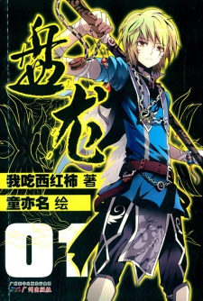
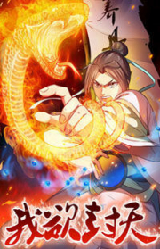

<section id="content">
	<div id="container">
		<div class="manga-new">
			
			<p class="manga-title">Panlong</p>
			<p class="manga-genre"><span class="genre">Genre:</span>Action, Adventure, Fantasy, Supernatural</p>
			<p class="manga-description"><span class="description">Description:</span> <span class="details">Linley is a young noble of a declining, once-powerful clan which once dominated the world. He has large aspirations and wants to save his clan. Linley's journey begins with an accident when he discovers a ring. He takes a liking to this ring, which has a carved dragon, coiling around it. 
			<br /><br />
			Upon being injured during a battle between two powerful fighters, he discovers that his ring is not what he thought it was and possesses powers beyond his imagination.</span> </p>
		</div>

		<div class="manga-new">
			
			<p class="manga-title">I shall seal the heaven</p>
			<p class="manga-genre"><span class="genre">Genre:</span>Action, Adventure, Comedy, Martial Arts</p>
			<p class="manga-description"><span class="description">Description:</span> <span class="details">This is about a failed young scholar named Meng Hao who gets forcibly recruited into a Sect of Immortal Cultivators. In the Cultivation world, the strong prey on the weak, and the law of the jungle prevails. Meng Hao must adapt to survive. And yet, he never forgets the Confucian and Daoist ideals that he grew up studying. This, coupled with his stubborn nature, set him on the path of a true hero. What does it mean to “Seal the Heavens?” This is a secret that you will have to uncover along with Meng Hao.</span> </p>
		</div>
	</div>
</section>
	
			